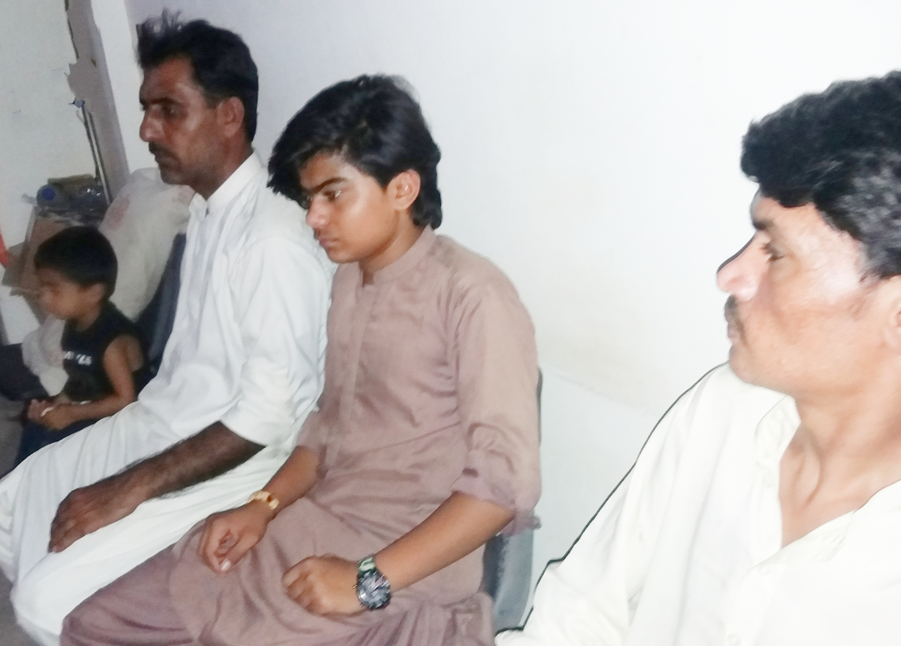

Established in 1999, Paras Clinic was located in Citizen's Colony Hyderabad. Due to certain curcumstances it was shifted to Sarfaraz Colony where it was renamed as "Urooj Clinic". Its foundation was laid to serve the people to make the society healthier. After few years it was moved to to Qasimabad where it was second time renamed as "Paras Clinic". Shifting to Qasimabad, the dispensory was made the part of clinic for the first time. There, a big number of people were served and healed with Allah's mercy beside the treatment.
Later it was shifted to Tando Ghafoor Shah jahanian Near new Max Bachat London Town in 2013 where it exits till the present time where the physician along with the paramedical staff tried their level best to not let any patient go unsatisfied. Thus they worked for them feeling their patients' pain as of their own.
Moving to London Town, separate portion for female patients was first time introduced along with the necessary requirements. A bunch of urgently required medicines is also available for quick relief of patients. The physician and the staff are continously working for the betterment and progress of people to come up with the healthier society. Physician says: "Shifa from the illness is by Allah's will, we just try our best to help patients curing their physical and mental health".
(BSc.M.B.B.S, R.M.P)
Dr.Aijaz Ahmed Shaikh, a well known medical and general physician of Qasimabad has graduated from Chandka Medical College Larkana (Sindh) in 1995 and completed the House Job from Liaquat Medical College Hopital Jamshoro in 1997. He worked as Trainee RMO in Liaquat Medical Hospital for 3 years. He later worked in several hospitals of Hyderabad including Wali Bhai Rajputana Hospital. He also had an experience of working and treating several patients in MK Hospital, Jeejal Maau Hospital and Mehran Charitable Hospital Hyderabad.
With the courage and devotion of serving people, he started a clinic on a small scale in his own town which led him to become an experienced physician known today.
Mr. Deedar Ali, a well experienced person is working at Paras clinic since one year. He has completed his one year Dispensory course from LUMHS Jamshoro in 2002. After completeing his studies, he worked as a member of Paramedical staff in one of the hospitals in Bhittai Town, Hyderabad for six years. Later he worked for people and served the patients in several hospitals of Hyderabad including Jijal Maau Hospital, Shafay Hospital, Aasim Clinic.
Having the dedication and courage of working for the people and utilizing his abilities for serving the patients, he continued his practice in Mehran Charitable Child Maternity & General Hospital since last four years where his remarkable services are appreciated by several patients treated by him. His experience and cooperation led him to join Paras Clinic where he is working till the present time.
Tando Ghafoor Shah Jahanian
Near London Town, Qasimabad Hyderabad
0312-3152449
0331-3636455
draijazshaikhsb786@gmail.com
facebook.com/Aijaz Shaikh